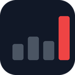

YT Outlier Finder
Save outlier videos, titles and thumbnails to Content OS.
Connect Content OS
Stored only in this Chrome profile.
How to use
- FilterOpen the popup on YouTube to show only videos above an outlier score, subscriber or view range.
- Save a videoHover any video and click Save. Its outlier score comes with it.
- Save just the title or thumbnailRight-click a video and choose Save title or Save thumbnail to Content OS.
Outlier scores come from vidIQ Vision for YouTube, so install it alongside this extension.